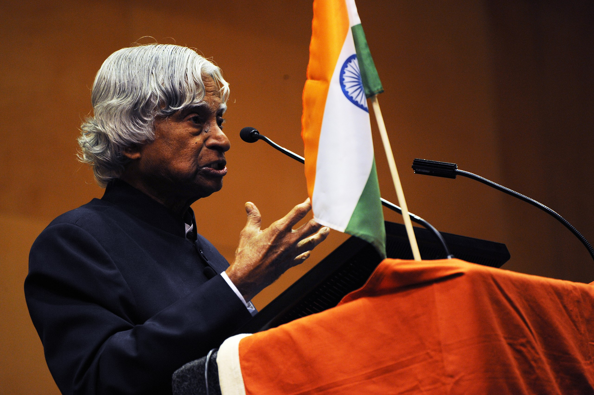

About APJ Abdul Kalam
Dr.A.P.J. Abdul Kalam, widely known as the "Missile Man of India", was born on October 15, 1931, in Rameswaram, Tamil Nadu. He pursued his education in physics at St. Joseph's College, Tiruchirappalli, and later specialized in aerospace engineering at the Madras Institute of Technology. Dr. Kalam's illustrious career began at the Defense Research and Development Organization (DRDO) and the Indian Space Research Organization (ISRO), where he played a vital role in India's civilian space program and military missile development. His significant contributions include the development of the Agni and Prithvi missiles, making India a formidable force in defense technology. Dr. Kalam also served as the 11th President of India from 2002 to 2007, during which he was affectionately known as the "People's President". His life and work continue to inspire millions across the globe, particularly in the fields of science and education.
Notable Achievements
Dr. A.P.J. Abdul Kalam's remarkable achievements span across various fields, including science, education, and public service.
Here are some of his significant accomplishments:
Awards and Honors:
- Bharat Ratna (1997): India's highest civilian award, recognizing his contributions to science and engineering.
- Padma Vibhushan (1990): Awarded for his distinguished service in the fields of science and engineering.
- Padma Bhushan (1981): In recognition of his work with ISRO and DRDO.
- Indira Gandhi Award for National Integration (1997): For his contributions to promoting national integration.
- Veer Savarkar Award (1998): For his role in national development and defense.
Publications:
- Wings of Fire (1999): An autobiography detailing his journey from a small town to becoming India's premier scientist and President.
- Ignited Minds (2002): A book aimed at inspiring the youth of India to dream big and works towards a better future.
- India 2020: A Vision for the New Millennium (1998): Co-authored with Dr. Y.S. Rajan, outlining a roadmap for India to become a developed nation by 2020.
- The Luminous Sparks (2004): A collection of his poems and personal musings.
- Turning Points: A Journey Through Challenges (2012): A sequel to his autobiography, focusing on his post-presidency years.
Projects and Contributions:
- Integrated Guided Missile Development Program (IGMDP): A major initiative that led to the development of missiles like Agni, Prithvi, Trishul, Akash, and Nag.
- Pokhran-II Nuclear Tests (1998): Played a key role in India's second nuclear test, bolstering national security.
- Indigenous Satellite LAunch Vehicle (SLV-III): Successfully led the development and launch of India's first satellite launch vehicle, which placed the Rohini satellite in orbit in 1980.
- Project Valiant and Project Devil: Early initiatives aimed at developing ballistic missiles.
- Technology Vision 2020: A comprehensive plan to transform India into a developed nation through advancements in technology and innovation.
Famous Quotes
Dr. A.P.J. Abdul Kalam, known for his inspirational thoughts and speeches, has left behind a wealth wisdom.
Here are some of his famous quotes:
"Dream is not that which you see while sleeping, it is something that does not let you sleep."
"Learning gives creativity, creativity leads to thinking, thinking provides knowledge, and knowledge makes you great."
"Don't take rest after your first victory because if you fail in second, more lips are waiting to say that your victory was just luck."
"You have to dream before your dreams can come true."
"Man needs his difficulties because they are necessary to enjoy success."
"Let us sacrifice our today so that our children can have better tomorrow."
"If you want to shine like a sun, first burn like a sun."
"Failure will never overtake me if my determination to succeed is strong enough."
"To succeed in your mission, you must have single-minded devotion to your goal."
"The youth need to be enabled to become job generators from job seekers."